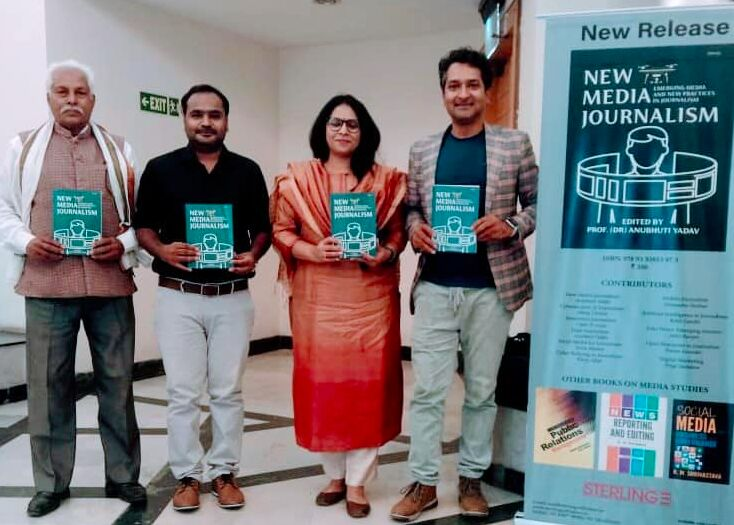
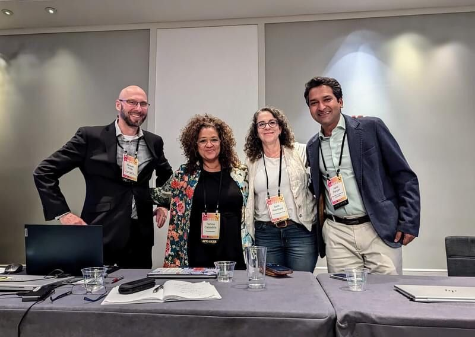
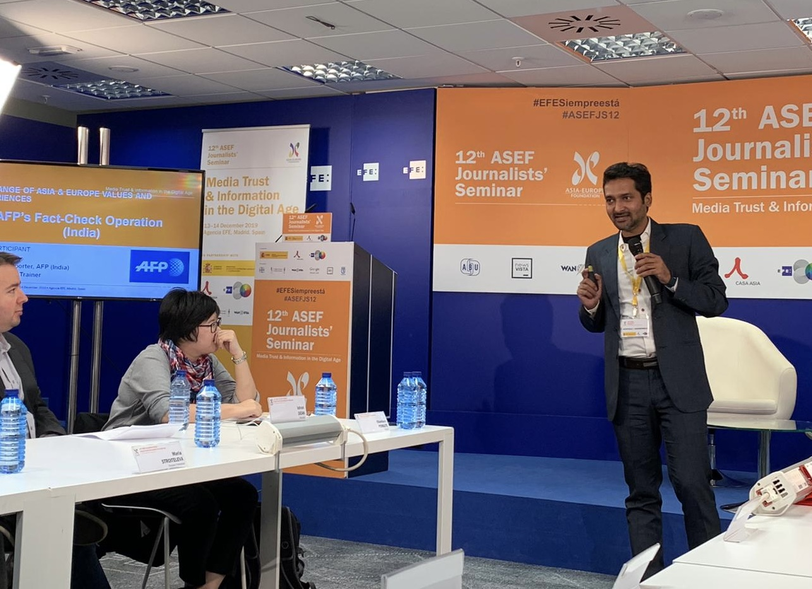

What the Digital Trail Reveals About Influence Operations
A long-form exploration of how evidence trails become public records, and why the persistence of metadata matters in an age of automated disinformation.
Read report →Akhil Ranjan is a London-based, bilingual freelance journalist specialising in uncovering organised misinformation networks and digital manipulation techniques across South Asia.
Got a tip, an idea, or a project I can help with?
Let's connectSelected Work
This set changes depending on the role — I swap these in and out to lead with OSINT work, multilingual reporting, or South Asia expertise, whichever a recruiter or editor most wants to see.
A long-form exploration of how evidence trails become public records, and why the persistence of metadata matters in an age of automated disinformation.
Read report →Send me the piece you'd like featured here — e.g. something showcasing OSINT method or South Asia coverage.
A multilingual (Hindi/English) piece would round this row out nicely.
Beyond the Byline


